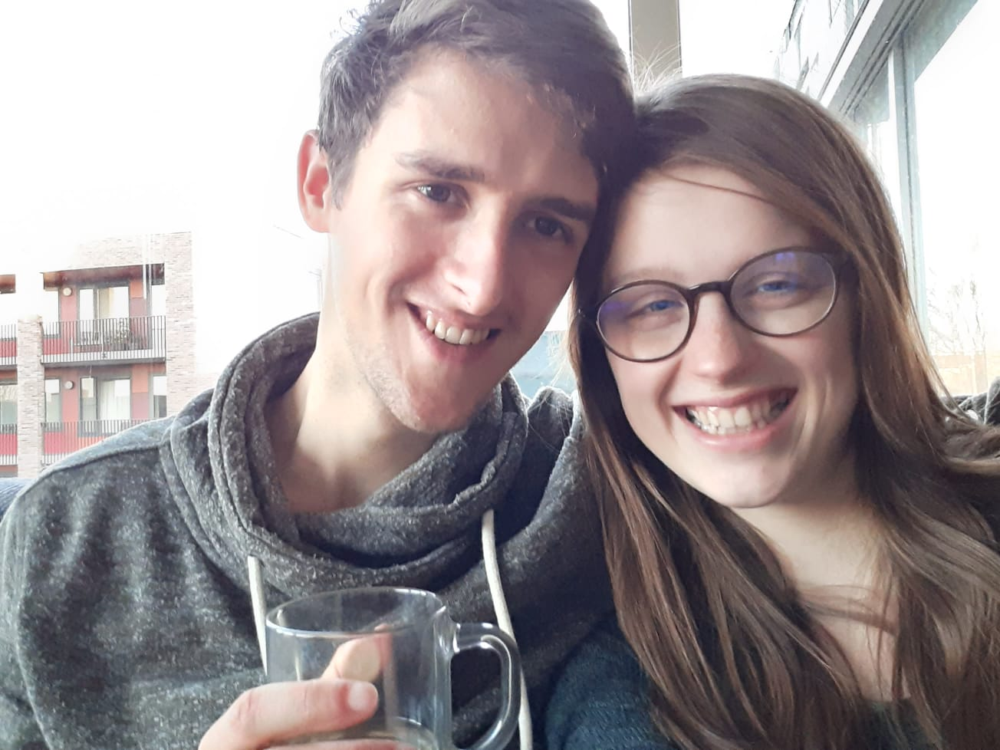
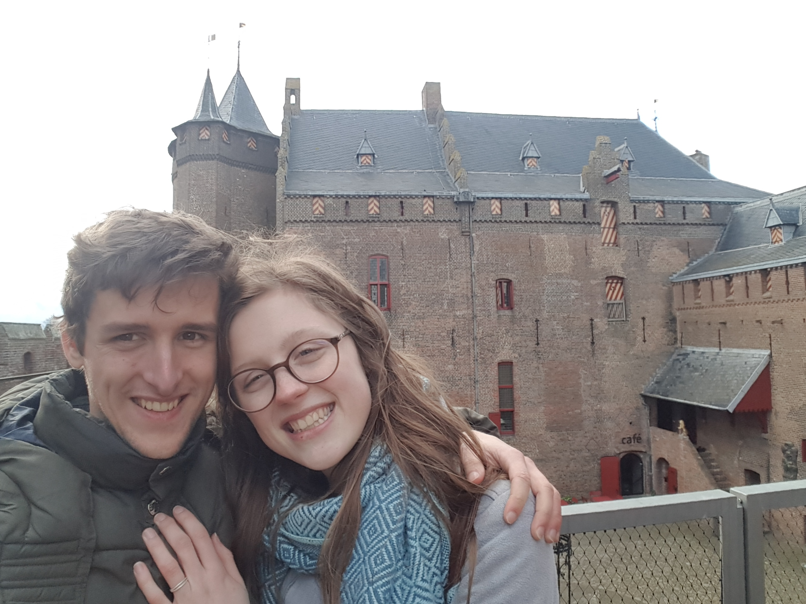
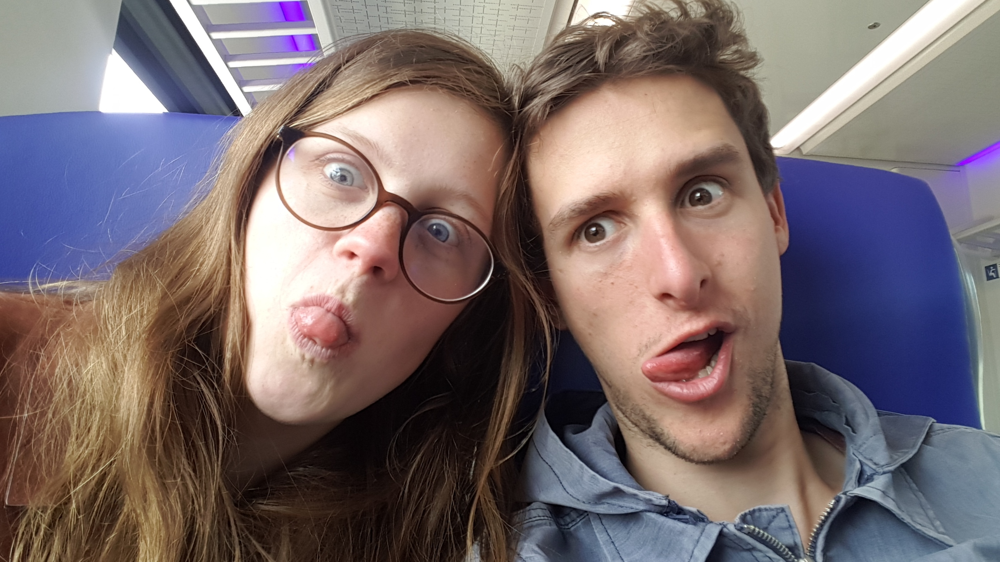
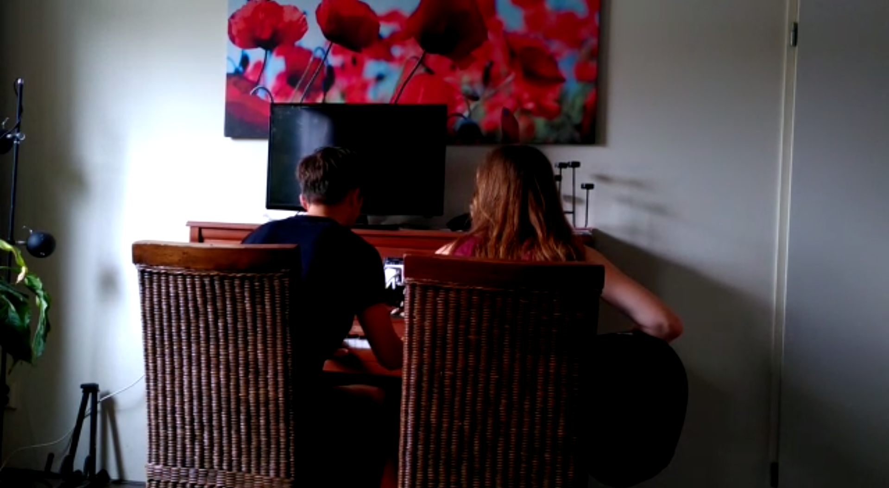

Nathan & Arjanna
Dit verhaal begint in Amsterdam in een oud bejaardentehuis, met lekkende plafonds, leidingen met legionella en een klagende lift. Tussen het geschuifel van rollators, klapperende gebitten,
ouderengymnastiek en vrijdagmiddagbingo's woonden sinds een aantal maanden studenten.
Arjannas perspectief:
Ik was één van deze studenten. Het bejaardentehuis zou binnenkort gesloten worden en daarom moesten steeds meer ouderen verhuizen. De bejaarden die steeds meer hun bejaardencollega's zagen vertrekken,
konden wel wat gezelschap gebruiken. Na een bijzondere ontmoeting met een huisbaas die op Opwekking vroeg of ik nog een woning nodig had, belandde ik in een schattig seniorenappartementje waar vanuit ik mijn master
zou volgen. Op de dag dat ik mijn contract tekende samen met drie anderen, viel me een van de jongens op. Hij had een houten kruis om zijn nek en vertelde dat hij games maakte. Nathan heette hij geloof ik.
In de maanden die volgden, leerde ik de bewoners steeds meer kennen. Hun humor, hun gemopper over het eten en hun passies. Met een aantal van hen besloot ik een schilderclubje op te richten en ik genoot ervan om
samen met hen te kletsen en te tekenen. De tijd vloog voorbij. Op een vroege ochtend, het was 14 februari, stapte ik de deur uit, toen ik opeens een roos voor mijn deur zag liggen. Een gevouwen roos van papier.
Met een klein briefje waarop stond: voor Arjanna. Wie had dat gedaan? Ik was helemaal onderste boven, ik snapte er niets van. Samen met Anne (ceremoniemeester) die ook in Amsterdam woonde, hebben we een paar dagen
gespeurd, geprobeerd mensen te polsen en het handschrift te ontcijferen. Ik had geen idee. Totdat ik zaterdag weer ging schilderen.
Nathans perspectief:
Om eerlijk te zijn was Arjanna me nog niet eerder echt opgevallen, maar toen ik binnen kwam bij 'de schilderclub' werd ik meteen door haar verrast. Ze trok mijn aandacht door de manier waarop ze één van de bejaarde
bewoners toesprak. Echt waar, ik had nog nooit eerder iemand zo oprecht en lief een bejaarde aan zien spreken. En dat terwijl deze oude vrouw zo dement was dat ze de begroeting 1 minuut later al weer vergeten zou
zijn. Tijdens het schilderen trok Arjanna opnieuw steeds meer mijn aandacht door haar intelligentie, haar creativiteit en door haar oprechte interesse. Ik wilde haar graag beter leren kennen!
Ik vond het echt onwijs spannend om Arjanna mee uit te vragen. Ik had nog nooit eerder zoiets gedaan. Het was ook heel akward! Maar ik wist dat ik niet lang meer op deze plek zou blijven wonen en
daarom heb ik niet lang gewacht.

Arjannas perspectief:
In de weken die volgden en waarin we afspraken, leerde ik Nathan steeds beter kennen. Hij was ontzettend lief, geïnteresseerd, gepassioneerd en hield van God. Ik had het gevoel dat God zei dat dit mijn man zou worden. Maar tegelijk vond ik het super spannend om met hem af te spreken.
Ik had nogal wat dingetjes uit mijn verleden en nachtmerries die hem vast zouden afschrikken en waardoor hij zou wegrennen. Toch besloot ik het hem te vertellen, daar had Nathan recht op. Op een bankje in het park,
gingen we s ochtends samen ontbijten en bijbellezen. Het was voor mij de mooiste date van allemaal. Toen ik Nathan vertelde over alles wat me had bezig gehouden rende hij niet weg.. Hij weigerde. Hij wilde me
steunen en liet me zien hoe sterk zijn liefde was door Jezus die in hem werkte.
Door veel wandelingen, gesprekken, liedjes en stille tijd samen, kregen we steeds meer vertrouwen in elkaar en in God. Ik kan met Nathan lachen, bidden en huilen. Precies een jaar nadat we een relatie kregen stond
Nathan opeens in de klas, waar ik les aan het geven was. Opnieuw had hij het voor elkaar gekregen om me helemaal te verbazen. Stamelend liep ik achter hem aan, maar hij liet zich niet van zn plan afbrengen.
Na een treinreis en een wandeling stonden we opeens voor het Muiderslot. Ik was heel blij dat hij zo'n leuk uitje had bedacht en genoot van het museum. Toen we bovenop het kasteel van het uitzicht genoten,
ging Nathan plots voor me op de knieën. Natuurlijk zei ik ja!

Nathans perspectief:
In het begin was onze relatie voor mij niet altijd makkelijk. Ik wilde er vol voor gaan, maar hoe wist ik nou dat Arjanna 'de ware' zou zijn? Mijn emoties schommelden en ik dacht dat ik niet zou mogen
twijfelen als Arjanna echt bij mij zou passen. Dankzij Arjanna's onvoorstelbare vertrouwen en dankzij de Bijbel heb ik geleerd dat ware liefde niet afhankelijk is van emoties, maar van een keuze waar je achter blijft
staan. Naarmate dit besef groeide, besloot ik dat ik met haar wilde trouwen, want zij vult me aan als geen ander. Arjanna en ik delen onze diepste overtuigingen, we kunnen elkaar steunen op onze zwakste momenten
en ik ken niemand met wie ik zoveel lol kan maken als met Arjanna. Daarom twijfel ik niet langer.

Arjannas perspectief:
In de weken na onze verloving zweefden we vanaf onze roze wolk zo de coronatijd in en dachten na over wanneer we wilden trouwen. Het was lastig met al die maatregelen, die misschien nog heel lang zouden duren.
Toch werd het steeds duidelijker: we wilden niet deze tijd afwachten in onzekerheid, we wilden gewoon trouwen! En zo kwamen we uit op 31 oktober. Wat er ook gaat gebeuren met corona, we hopen op die dag ja
tegen elkaar en tegen God te zeggen.

Dit verhaal begon in een bejaardentehuis en we hopen natuurlijk dat het daar ook zal eindigen. Dat we heel veel jaren samen mogen delen, samen liedjes mogen zingen, lachen en God zoeken. Dit verhaal begon ook
bij God en door God. Eigenlijk is dit niet ons, maar Zijn verhaal. Hij bracht ons op een bijzondere manier bij elkaar bij een schilderclub voor bejaarden. Dankzij onze relatie hebben we al zoveel mogen ontdekken
over wat liefde is en hoe God liefde gebruikt om te inspireren en te genezen. Hij is de stabiele basis waarop wij ons huwelijk willen bouwen. Want Hij is de bron voor alle liefde die wij kunnen geven. Daarom hopen
wij ons hele leven lang van hem te blijven leren genieten van liefde en te leren hoe wij die liefde in kunnen zetten om hoop te brengen in deze gebroken wereld.
Liefs,
Nathan en Arjanna